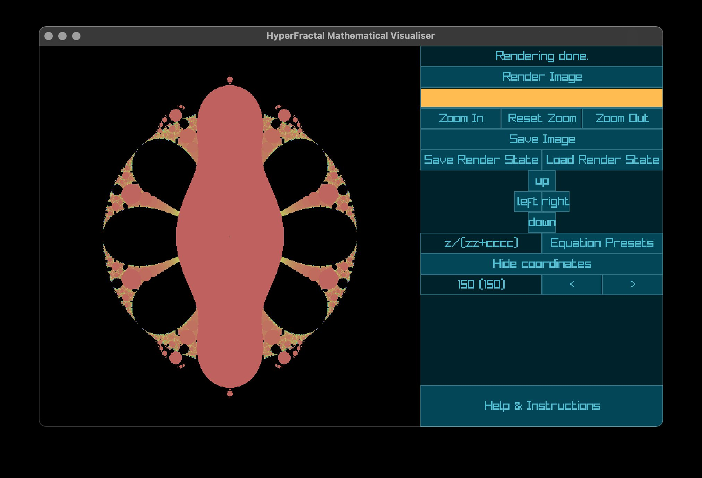

deep zoom render of the Mandelbrot set
deep zoom render of the Mandelbrot set
HyperFractal is an interactive GUI fractal renderer tool written in C++. it allows you to pan/zoom around a selection of well-known fractal equations, input your own custom equations which are parsed at runtime, change the colour scheme and iteration count, and save rendered images and configurations to a database.
a fractal is a mathematical phenomenon, usually described as a shape with an infinite range of feature scales (often exhibiting self-similarity). fractals are generated by evaluating an equation recursively across a field of initial values (which are given by translating pixel coordinates into a complex number) and counting the number of iterations required before the evaluated equation tends toward infinity. this count is then used to colour the pixel.
this project was my coursework project for A Level Computer Science, and i developed it over the course of a year.
deep zoom render of the Mandelbrot set
i made use of raygui for building the GUI, the rest of the codebase is my own, in mostly-pure C++.
i learned a lot about optimisation during this project, including the danger of micro-optimising code too early. i also learned a lot about the maths of fractals and complex numbers, which was complemented nicely by my Pre-U Maths studies.
something i never managed to get fully working was arbitrary precision. you may have seen youtube videos zooming far, far into fractals, which requires absurd levels of numerical precision to resolve details. unforunately i was never able to get a multiple precision library working for this project, so it's limited by double precision (64-bit floating point number), and zooming in far enough will reveal blocky artefacts which result from rounding due to the limited precision.
i did implement multithreading capability, allowing the program to take full advantage of the CPU for rendering, such that rendering a full size image only takes a few seconds even at high iteration counts.
i also wrote fairly detailed instructions explaining how to use the tool. to explore the fractal, you can click to recenter the view, use +/- to zoom in/out, and press enter to trigger a full re-render.

the program running on macOS